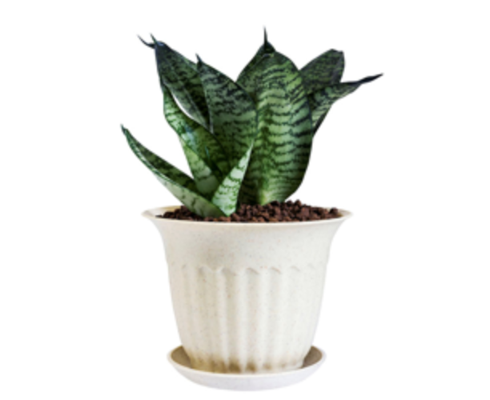
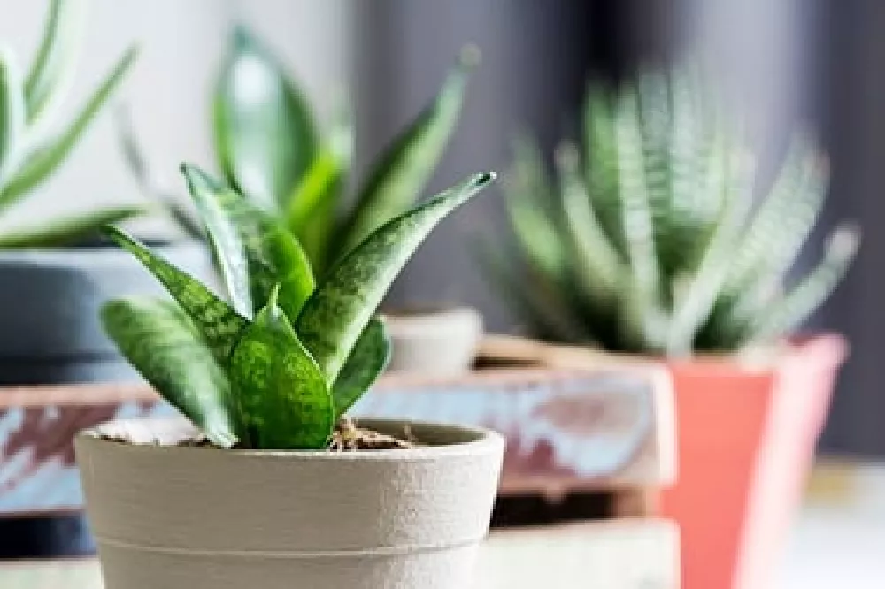

Snake Plant (Sansevieria trifasciata)
Description
The Snake plant, which is also known as "Mother-in-law's tongue" due to its characteristic
of being a tough plant, or the "bowstrings hemp" due to
the ability to make bowstrings from the fiber of its
leaves, is biologically known as Sansevieria trifasciata.
COMMON NAME: Mother-in-law's tongue, bowstring hemp, devil's tongue
SCIENTIFIC NAME: Sansevieria trifasciata
FAMILY NAME: Asparagaceae
Facts
ORIGIN: West Africa and Asia
HEIGHT: 100 cm maximum (40 inches)
LIGHT: Indirect light, artificial light, filter harsh light
WATER: Moderate
FERTILIZER: Weak liquid fertilizer.
TEMPERATURE: 40 0-85 0 Fahrenheit
SOIL/GROWING MEDIUM: Well-drained
HUMIDITY: Average
PROPAGATION: Seeds, cuttings, division in water
PESTS: Mealybugs, spider mites
POISONOUS FOR: Mild toxicity. Stay away from pets and babies
Source: https://www.greenandvibrant.com/snake-plant